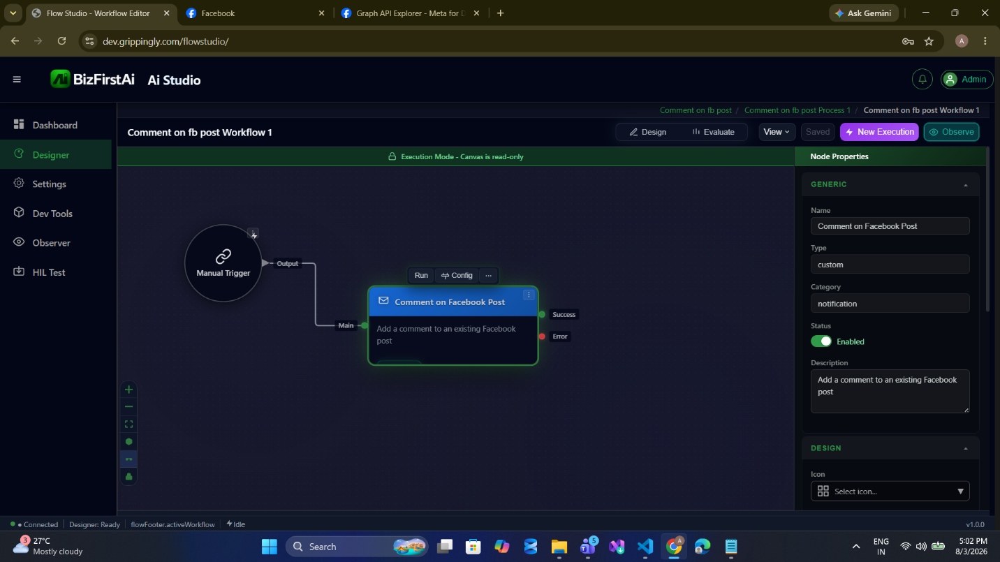
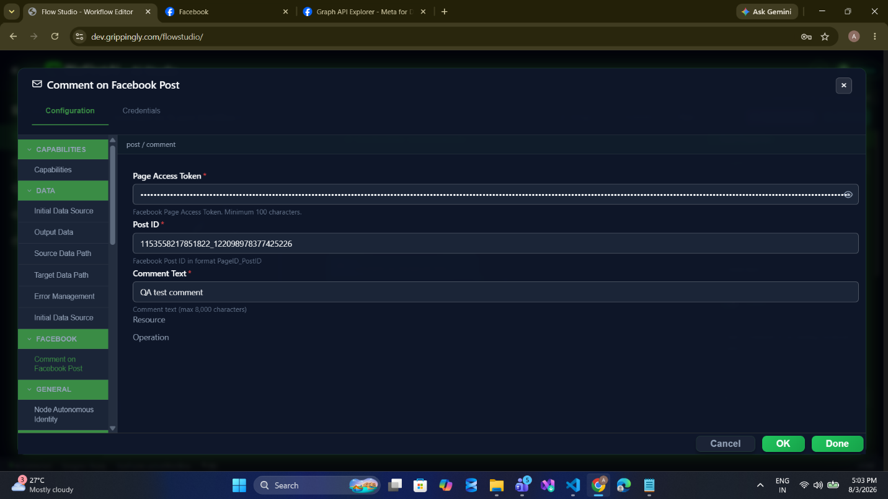
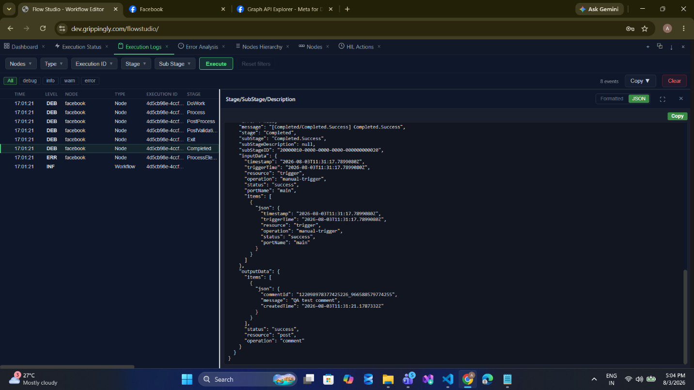
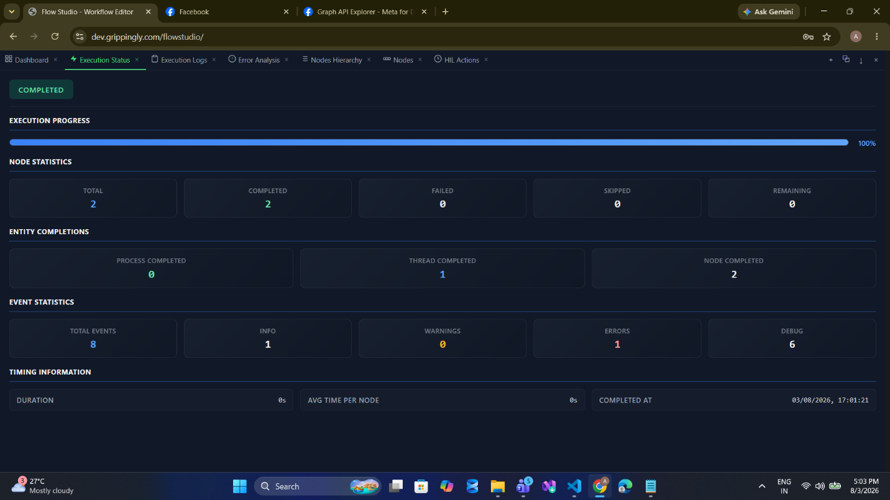
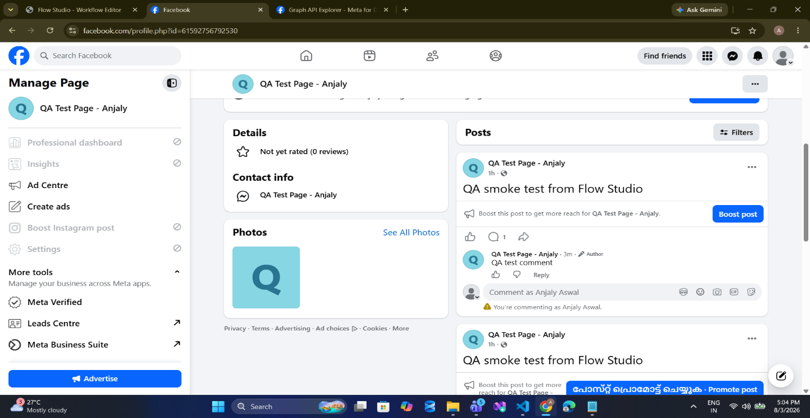
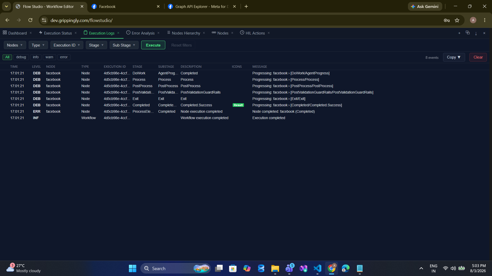

post/comment
Add a comment to a Facebook post as the Page. Also the way to reply to an existing comment. Returns the new comment ID.
Palette name: Comment on Facebook Post · Graph call:
POST /{postId}/comments · Permissions: pages_manage_engagement · Field reference: Post Operations
When to Use
- Auto-acknowledge. Reply publicly to comments that match a keyword, so customers see a response quickly.
- Post follow-up context. Publish a post, then add a comment carrying links, disclaimers, or sources that would clutter the post body.
- Reply to a comment. Pass a comment ID as
postId— Facebook treats replies as comments on a comment. There is no separate reply operation. - Escalation trail. Leave a visible note when a workflow routes an issue to a human.
Walkthrough
1Place the node

2Configure
Breadcrumb post / comment. Three fields: the token, the Post ID, and the Comment Text.

{pageId}_{postId} form — exactly what page/post returns as postId.3Run

4Read the output
Expand the node's log entry and switch to the JSON view to see the emitted payload.

outputData.items[0] carries commentId, the echoed message, and createdTime, alongside status, resource, and operation at the top level. Record the commentId — the moderation operations need it.
5Verify on the Page

Configuration
| Field | Required | Description |
|---|---|---|
resource | Required | Must be post. |
operation | Required | Must be comment. |
pageAccessToken | Required | Page access token, or a stored credential. |
postId | Required | Target post ID in {pageId}_{postId} form. Pass a comment ID here to reply to a comment. |
message | Required | Comment text. Maximum 8,000 characters. |
Note this operation does not read pageId — the post ID already identifies the target.
Sample Configuration
{
"resource": "post",
"operation": "comment",
"credentialID": 4021,
"postId": "1153558217851822_122099783774252226",
"message": "Thanks for reaching out. Our team will follow up by direct message."
}Replying to a specific comment surfaced by post/getComments:
{
"resource": "post",
"operation": "comment",
"credentialID": 4021,
"postId": "{{ $output.parsedComments.items[0].id }}",
"message": "Good question - full details are on our support page."
}Output
| Field | Type | Description |
|---|---|---|
status | string | "success" |
items[0].commentId | string | New comment ID. Required by moderation/hideComment and moderation/deleteComment. |
items[0].message | string | The text that was sent, echoed back. Not re-read from Facebook. |
items[0].createdTime | string | ISO-8601 timestamp generated by the node on success. |
{
"status": "success",
"resource": "post",
"operation": "comment",
"items": [
{
"commentId": "122099783774252226_966580579776255",
"message": "QA test comment",
"createdTime": "2026-08-03T11:31:17.5787131Z"
}
]
}Validation
| Message | Cause |
|---|---|
Invalid access token | Token blank or shorter than 100 characters. |
Invalid post ID | postId is blank. |
Comment exceeds maximum length of 8000 | Comment text too long, or blank. |
Notes and Cautions
- Comments are public and attributed to the Page. Anything an automated workflow posts is visible to everyone who can see the post.
- Not idempotent. Two runs produce two comments. Guard auto-reply workflows with a check that the Page has not already replied.
- Public reply versus private reply. This posts publicly. To answer privately instead, use message/send — but that requires a PSID and an open 24-hour messaging window.
- The commenter's identity may be unavailable. When reading comments back, Graph frequently omits or empties the
fromfield for users who have not granted profile access. Do not build logic that assumes a name is present.
Related
- post/getComments — find comments worth replying to
- moderation/hideComment — hide rather than answer
- message/send — reply privately instead
- Examples — a complete comment-triage workflow